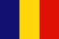

|
Länderinformationen Rumänien
1. Das Wichtigste auf einen Blick2. Sehens- und Hörenswertes
3. Politik & Gesellschaft
4. Schmeckenswertes
5. Medien
6. Reisetipps
1. Wissenswertes
|  | Hier
haben wir die wichtigsten Zahlen und Fakten zu Rumänien
und der rumänischen Sprache zusammengetragen. |
 Die
Sprache
Die
Sprache
Die
rumänische Sprache gehört zu den indoeuropäischen
Sprachen. Diese haben durch ihre frühere Verbreitung im
europäischen und asiatischen Raum und später durch die
Kolonialisierung weltweite Bedeutung erlangt. Die indoeuropäischen
Sprachen werden heute von über zwei Milliarden Menschen
gesprochen und sind somit die am weitesten verbreitete Sprachfamilie
der Welt. Die rumänische Sprache gehört wie der Name
bereits vermuten läßt zu den romanischen Sprachen, die auf
dem Lateinischen, in der Antike Hauptträger der römischen
Kultur, basieren. Innerhalb dieser Sprachfamilie gehört das
Rumänische zur Untergruppe der ostromanischen Sprachen. Andere -
westromanische - Sprachen sind beispielsweise Französisch,
Spanisch und Italienisch. Alle romanischen Sprachen haben sich seit
der Zeit der Spätantike in den einzelnen Regionen vom
gesprochenen Latein fortentwickelt. Im Verlauf des frühen
Mittelalters haben sich dann die einzelnen romanischen Sprachen
herausgebildet und es entstanden erste Aufzeichnungen. Die Ursprünge
des Rumänischen liegen jedoch im Vergleich zu den anderen
romanischen Sprachen weitgehend im Dunkeln. In der Sprachwissenschaft
gibt es zwei unterschiedliche Theorien zur Entstehung der
rumänischen Sprache. Zum einen gibt es die Kontinuitätstheorie,
derzufolge die Restbevölkerung der ehemals römischen
Provinz Dakien für die Entwicklung der rumänischen Sprache
verantwortlich sei. Zum anderen existiert die Migrationstheorie, nach
der die Rumänen erst im 10. Jahrhundert in das heutige Gebiet
Rumäniens, vor allem nach Transsylvanien, eingewandert seien.
Obwohl die ersten schriftlichen Aufzeichnungen in Rumänisch erst
im 16. Jahrhundert belegt sind, wird die Entstehung der rumänischen
Sprache daher bereits zwischen 600 und 900 n. Chr. angesetzt.
Im
Rumänischen gibt es vier Hauptdialekte. Zum ersten gibt es das
Dakorumänisch, das eigentliche Rumänisch, das heute von
ungefähr 19 Millionen Menschen in Rumänien, von etwa 4
Millionen Menschen in Moldawien, sowie in Teilen von Serbien und
Montenegro, Slowenien, Bosnien, Makedonien, Bulgarien, Ungarn
gesprochen wird. Das Dakorumänisch ist Amtssprache in Rumänien
und Moldawien.
Die
aromunische Sprache, oft auch Mazedorumänisch genannt, wird je
nach Land im lateinischen oder griechischen Alphabet geschrieben. Die
Sprache hat starke Einflüsse aus dem Griechischen. Es hat sich
inzwischen jedoch eine standardisierte Rechtschreibung mit dem
lateinischen Alphabet durchsetzen können. Aromunisch wird von
etwa 500.000 Sprechern gesprochen und hat somit von den
balkanromanischen Sprachen südlich der Donau die größte
Sprecherzahl. Das Aromunische wird heute in Teilen von Rumänien,
Albanien, Mazedonien, Bulgarien und Serbien gesprochen, aber nur in
Mazedonien werden die Aromunen als Minderheit anerkannt.
Die
meglenorumänische Sprache wird heute nur noch von einigen
tausend Sprechern im Grenzgebiet zwischen Rumänien und
Mazedonien gesprochen. Bei den Megleno-Rumänen sind im Gegensatz
zu den Aromunen eher slawische Einflüsse in der Sprache zu
finden.
Auch
die istrorumänische Sprache auf der kroatischen Halbinsel
Istrien wird nur noch von wenigen Menschen gesprochen. Alle
Istrorumänen sind aufgrund der geographischen Lage zweisprachig,
daher hat die kroatische Sprache auch starken Einfluss auf das
Istrorumänische genommen.
Die
rumänische Schriftsprache ist heute das Dakorumänische. Die
erste bekannte Aufzeichnung des Dakorumänischen stammt aus dem
Jahr 1521. In der rumänischen Sprache sind einige Eigenschaften
des Lateinischen erhalten geblieben, welche bei anderen romanischen
Sprachen verloren gingen. Das Rumänische enthält aber auch
viele Lehnwörter aus dem Slawischen, dem Griechischen, dem
Türkischen, dem Ungarischen und dem Albanischen.
 Die
Schrift
Die
Schrift
Die
rumänische Sprache wurde aufgrund des orthodoxen Glaubens und
der slawischen Nachbarn zu Beginn (16. Jahrhundert) im kyrillischen
Alphabet geschrieben. Im 18. Jahrhundert wurde in Siebenbürgen
(gehörte damals zum Habsburger Kaiserreich) langsam begonnen das
lateinische Alphabet einzuführen. Im Jahre 1862 wurde dann in
Rumänien offiziell ein eigenes rumänisches Alphabet
eingeführt, welches auf dem lateinischen Alphabet basiert. Das
heute verwendete rumänische Alphabet besteht aus 26 lateinischen
Buchstaben und 5 weiteren Sonderzeichen. Die folgende Tabelle zeigt
Ihnen, wie die einzelnen Buchstaben im Rumänischen ausgesprochen
werden:
Buchstabe |
Aussprache |
a, A |
wie im
Deutschen |
ă, Ă |
ist –
nach der phonetischen Definition - ein Schwalaut und wird ähnlich
wie das " e" in "Mück e"
gesprochen. |
â, Â |
ist –
nach der phonetischen Definition - ein ungerundeter, geschlossener
Zentralvokal. Es gibt keine deutsche Entsprechung, es ähnelt
entfernt einem " ü". |
b, B |
wie im
Deutschen |
c, C |
wie das
deutsche "k". Vor den Vokalen "e" und "i"
wird es wie "tsch" (wie im ital. " Ciao")
ausgesprochen. |
d, D |
wie im
Deutschen |
e, E |
ist –
nach der phonetischen Definition – ein ungerundeter,
halbgeschlossener Vorderzungenvokal. Gesprochen wird dieser Vokal
wie ein offenes "e" - wie das dt. "ä" im
Wort „Bäcker“. |
f, F |
wie im
Deutschen |
g, G |
wie im
Deutschen, aber vor den Vokalen "e" und "i"
wird ein "dsch" (wie im ital. " Gigolo")
gesprochen. |
h, H |
wie im
Deutschen das "ch" (wie im Wort "Loch") |
i, I |
wie im
Deutschen, wird aber am Ende eines Wortes nicht betont und ist
fast nicht hörbar |
î,
Î |
gesprochen
wie das "â", ist es - nach der phonetischen
Definition - ein ungerundeter, geschlossener Zentralvokal. Es gibt
keine deutsche Entsprechung, es ähnelt entfernt einem " ü".
Der Unterschied zwischen "â" und "î"
ist nur sprachgeschichtlich bedingt. |
j, J |
wird wie ein
stimmhaftes "sch" gesprochen (wie im Wort " Chance") |
k, K |
wie im
Deutschen |
l, L |
wie im
Deutschen |
m, M |
wie im
Deutschen |
n, N |
wie im
Deutschen |
o, O |
wie im
Deutschen |
p, P |
wie im
Deutschen |
q, Q |
wie im
Deutschen |
r, R |
wird gerollt
wie in der spanischen Sprache |
s, S |
ist immer ein
stimmloses "s" (wie im Wort "Ma sse") |
ş,
Ş |
wie das
deutsche "sch" |
t, T |
wie im
Deutschen |
ţ,
Ţ |
wie das
deutsche "z" |
u, U |
wie im
Deutschen |
v, V |
wie das
deutsche "w" |
w, W |
wie das
deutsche "w", kommt aber meist nur in Fremdwörtern
vor |
x, X |
wie das
deutsche "x", kommt aber meist nur in Fremdwörtern
vor |
y, Y |
wie das
deutsche "i", kommt aber meist nur in Fremdwörtern
vor |
z, Z |
ist immer wie
ein stimmhaftes "s" (wie im Wort " Sohn") |
 Bevölkerung
Bevölkerung
In Rumänien leben ungefähr 22,2 Millionen Menschen. Davon sind fast 90 Prozent Rumänen. Mehr als 6 Prozent der Bevölkerung sind Ungarn und weitere 2,5 Prozent sind Roma. Der Rest setzt sich aus Ukrainern, Deutschen, Russen und Türken zusammen.
Die am weitesten verbreitete Religion mit einem Anteil von rund 86 Prozent im Land ist die rumänisch-orthodoxe Kirche. Etwa 6,5 Prozent gehören der evangelischen Kirche, knapp 5 Prozent der römisch-katholischen Kirche und ungefähr 3,5 Prozent der griechisch-orthodoxen Kirche an. Trotz der langen russischen Besatzungszeit liegt der Anteil der konfessionslosen Menschen nur bei sehr geringen 0,2 Prozent.
Das Durchschnittsalter der Rumänen liegt bei 37,3 Jahren. Die Bevölkerung Rumäniens weist somit eine jüngere Altersstruktur auf als die in Deutschland (hier liegt das Durchschnittsalter bei knapp 43 Jahren). Die Geburtenrate lag 2008 in Rumänien bei 10,6 Geburten pro 1.000 Einwohner (entspricht durchschnittlich 1,38 Kindern pro Frau im Jahr 2008). Die durchschnittliche Lebenserwartung im Rumänien liegt bei rund 68 Jahren bei den Männern und rund 76 Jahren bei den Frauen. Die Bevölkerung in Rumänien nahm 2008 ab, was an der Auswanderung vieler junger Rumänien liegen kann (- 0,14 Prozent pro Jahr).
 Fläche
Fläche
Rumänien erstreckt sich über eine Fläche von 237.500 Quadratkilometer. Davon sind 230.340 Quadratkilometer Festland und der Rest ist Wasserhoheitsgebiet im Schwarzen Meer. Von der Fläche her ist Rumänien damit in etwa so groß wie das ehemalige Westdeutschland während des Kalten Krieges. Durch seinen Zugang zum Schwarzen Meer kommt Rumänien auf eine Küstenlänge von 225 Kilometern.
 Währung
Währung
Rumänien
ist erst seit 2007 Mitglied der EU und beabsichtigt den Euro
einzuführen. Es hat aber immer noch Probleme die Inflationsrate
einzuhalten und die rumänische Nationalbank hat sich zum Ziel
gesetzt den Euro zwischen 2012 und 2014 einzuführen. In Rumänien
wird also zur Zeit immer noch mit der rumänischen Währung,
dem Leu (RON), bezahlt. Einen
aktuellen Wechselkurs von Leu (RON) zum Euro können wir Ihnen an
dieser Stelle leider nicht bieten. Dieser lässt sich jedoch im
Internet mit wenig Aufwand leicht finden (geben Sie einfach bei einer
Suchmaschine den Begriff „Währungsrechner“ ein) oder
auch bei Ihrer Bank erfragen.
 Ökonomische
Situation
Ökonomische
Situation
Im
Jahre 2004 konnte die rumänische Wirtschaft ein Rekordwachstum
von 8,3 Prozent verzeichnen. Im folgenden Jahr 2005 sank das Wachstum
dann wieder auf immer noch gute 4,1 Prozent. Das gestiegene
Außenhandelsvolumen brachte trotz einer Steigerung des
Exportvolumens im Jahr 2005 insgesamt ein Leistungsbilanzdefizit von
rund 9 Prozent des Bruttoinlandsproduktes mit sich. Das bedeutet,
dass trotz des starken Wirtschaftswachstums in den letzten Jahren das
volkswirtschaftliche Vermögen im Land zurückgeht. Rumänien
wies 2007 ein Leistungsbilanzdefizit von 14,5 Prozent auf. Während
in Deutschland die Ausgaben die Ausgaben für Nahrungsmittel und
Energie im Durchschnitt bei rund 12 Prozent liegen, gibt ein Haushalt
in Ländern wie Rumänien und Bulgarien dafür
mittlerweile rund 50 Prozent aus. Im Jahr 2004 war die Inflationsrate
in Rumänien mit ungefähr 9,6 Prozent erstmals nach 15
Jahren einstellig. Im folgenden Jahr konnte die Inflationsrate mit
8,6 Prozent weiter gesenkt werden. Im Jahr 2007 lag die
Inflationsrate bei 6,6 Prozent und konnte somit das gesteckte Ziel
von 5 Prozent nicht erreichen. Es wird vor allem im Bereich der
Bauwirtschaft mit einer guten Entwicklung in den kommenden Jahren
gerechnet, da viele Infrastrukturprojekte im Straßen- und
Autobahnbau, im Eisenbahnbau und auch im Hafenausbau erforderlich
sind. Außerdem rechnet man auch in anderen Branchen wie dem
Maschinen- und Anlagenbau, dem Versicherungswesen, der chemischen und
pharmazeutischen Industrie und dem Tourismus mit einer guten
Entwicklung in den kommenden Jahren.
 Zeitzone
Zeitzone
Rumänien liegt in einer anderen Zeitzone als Deutschland, Österreich oder die Schweiz. Der Zeitunterschied beträgt dabei plus eine Stunde. Um Ihnen das anhand eines Beispiels zu erklären: Wenn es in München 12 Uhr mittags ist, zeigt die Uhr in Bukarest bereits 13 Uhr.
Es gibt in Rumänien ebenfalls eine Sommerzeit, sodass während der deutschen Sommerzeit der Zeitunterschied ebenfalls eine Stunde beträgt.
Im nächsten Kapitel haben wir einige ausgesuchte Reiseempfehlungen für Sie zusammengestellt.